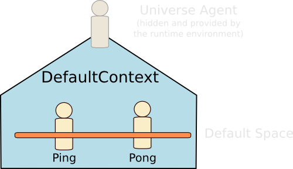

Agent Communication with the Ping Pong Agents
This document describes how to create a simple agent-based application in which agents are exchanging basic messages. Before reading this document, it is recommended reading the General Syntax Reference.
The elements that are explained in this tutorial are:
- the definition of an event;
- the definition of an agent;
- the sending of an event occurrence in the default space;
- the receiving of event occurrences; and
- the definition of a proactive behavior: waiting for partners.
The source code related to this tutorial may be found in the SARL demos.
-
Principle of the Application
The principle of the application is the following:
- The
Pingagent is sending aPingmessage to all agents. - The
Pongagent is receiving thePingmessage, and replies with aPongmessage to the sender of thePingmessage. - The
Pingagent is receiving aPongmessage and replies to the sender of thePongwith a newPingmessage.
These messages contain an integer number that indicates the number of the event.
 - The
Event definition
First, the Ping and Pong events must be defined.
-
Ping Event
The
Pingis an event that contains the index of the event. This index indicates at which position the event is located in the sequence of sentPingevent.The
indexattribute is a value, for making it unmodifiable after its initialization.For setting the value of the
indexvalue, it is mandatory to define a constructor.package io.sarl.docs.tutorials.pingpong event Ping { val index : int new(i : int) { this.index = i } } -
Pong Event
The
Pongis an event that contains the index of thePingevent for which thePongevent is created.The
indexattribute is also a value, and it must be set in a constructor.event Pong { val index : int new(i : int) { this.index = i } }
Pong agent
The second step of this tutorial is the definition of the agent that is waiting for Ping events, and replying Pong events.
-
First definition
The initial definition of the pong agent is:
agent PongAgent { } -
Handling the Ping event
The pong agent needs to handle the
Pingevents. For that, a "behavior unit" must be defined in the agent. According to the Agent Reference, theonkeyword followed by the name of the event permits to define a handler of events. This handler will be invoked by the runtime environment each time the agent is receiving aPingevent.agent PongAgent { on Ping { } } -
Replying to Ping with a Pong
Now, it is time to define how the pong agent is replying with a
Pongmessage.First, sending an event in the default space must be done with a built-in capacity:
DefaultContextInteractions. This capacity provides a collection of functions that enable the agent to interact with the default context, and its default space.For using the capacity, it is recommended declaring it with the
useskeyword. This keyword permits the agent to directly call the functions of the capacity as if they were defined as actions in the agent.The
DefaultContextInteractionscapacity provides the functionemit(Event)for emitting an event in the default space of the default context.The
Pongevent must be built with an index value as argument. This argument is the index stored in thePingevent. For accessing the occurrence of thePingevent, you must use the special keywordoccurrence. In the following example, thePongevent is built with the index argument stored in the receivedPingevent.agent PongAgent { uses DefaultContextInteractions on Ping { emit( new Pong( occurrence.index ) ) } } -
Restricting the scope of the Pong event
In the previous code, the event is emitted to all the agents belonging to the default space, including the pong agent.
For restricting the receiver of the
Pongevent to the initial sender of thePingevent, you must define a scope for thePongevent. TheDefaultContextInteractionscapacity provides the functionemit(Event, Scope<Address>)for sending an event with a specific scope.The SARL SDK contains the class
AddressScope. It is an implementation of aScopeon addresses (an address is the identifier of an agent in the default space). The creation of an instance ofAddressScopeis done with the utility functionScopes.addresses(Address*), which is getting a collection of addresses for building the matching predicate in the scope.In the following code, the scope permits to restrict to the initial sender of the
Pingevent.agent PongAgent { uses DefaultContextInteractions on Ping { emit( new Pong( occurrence.index ), Scopes.addresses( occurrence.source ) ) } }
Ping Agent
The third step of this tutorial is the definition of the agent that is sending Ping events, and waiting for Pong events.
-
First definition
The initial definition of the ping agent is:
agent PingAgent { } -
Handling the Pong event
The ping agent needs to handle the
Pongevents. For that, a "behavior unit" must be defined in the agent.agent PingAgent { on Pong { } } -
Re-sending a Ping when receiving a Pong
When the ping agent is receiving a
Pongevent, it re-sends aPingevent to the sender of thePongevent. This newPingevent has an index greater than the one of thePongevent.The receiving of the
Pingevent is restricted to the sender of thePongevent.agent PingAgent { uses DefaultContextInteractions on Pong { emit( new Ping( occurrence.index + 1 ), Scopes.addresses( occurrence.source ) ) } } -
Sending the first Ping
For starting the exchanges among the agents, it is mandatory to send a first occurrence of the
Pingevent.This emit is done when the ping agent is started, i.e. when the agent is receiving the
Initializeevent.agent PingAgent { uses DefaultContextInteractions on Pong { emit( new Ping( occurrence.index + 1 ), Scopes.addresses( occurrence.source ) ) } on Initialize { emit( new Ping(0) ) } } -
Delaying the sending of the first Ping
The previous code has a major problem: if there is no pong agent launched when the ping agent is sending the first
Pingevent, the application will reach a deadlock, even if the pong agent is launched later.For solving this problem, the ping agent must wait for sending the initial
Pingevent until the pong agent is belonging to the default space.The concrete implementation is based on the
Schedulescapacity, which provides a collection of functions for creating and launching asynchronous tasks.In the following code, a task is created with the name
waiting_for_partner. This task is executed every second with theeveryfunction (given by theSchedulescapacity). The code between the brackets contains the statements that will be periodically executed.In this periodically executed code, the agent is testing if it is the only one agent belonging to the default space. If not, the agent is sending the initial
Pingevent, and stopping the periodic task.agent PingAgent { uses DefaultContextInteractions, Schedules on Pong { emit( new Ping( occurrence.index + 1 ), Scopes.addresses( occurrence.source ) ) } on Initialize { val task = task("waiting_for_partner") task.every(1000) [ if (defaultSpace.participants.size > 1) { emit( new Ping(0) ) task.cancel } ] } }
Compile and Launch the agents
The fourth step of this tutorial is the definition of the launching process. In the rest of this section, we discuss the use of the Janus runtime environment for running the agents.
The Janus platform is designed to launch a single agent at start-up. Then, this launched agent must spawn the other agents in the system.
Important In this section, we explain how to launch the agents from the command line interface. For launching the agents from the Eclipse IDE, please read "Run SARL Agent in the Eclipse IDE".
-
Compile the code
You must have a file that contains the compiled files of the tutorial, the Janus platform, and all the needed libraries by SARL and Janus.
You could directly download this file by clicking on the download icon at the top of this page; or by compiling the source code yourself.
If you download the source code of the SARL demos, and compile them with Maven, you will obtain a JAR file with all the mandatory elements inside. This file is located in the
targetfolder, and it has a name similar tosarl-demos-0.1.0-with-dependencies.jar.
Method 1: Execute each agent in their own instance of Janus
The principle is to run each agent is a different instance of the Janus platform.
-
Execute with a runnable JAR
Here, there is two assumptions:
- The file
sarl-demos-0.1.0-with-dependencies.jaris executable, i.e. it can be directly launched by the Java Virtual Machine. - From this file, the JVM is launching the Janus bootstrap automatically, i.e. it has a Main-Class set to
io.janusproject.Boot.
java -jar sarl-demos-0.1.0-with-dependencies.jar io.sarl.docs.tutorials.pingpong.PongAgentand:
java -jar sarl-demos-0.1.0-with-dependencies.jar io.sarl.docs.tutorials.pingpong.PingAgentThe file
sarl-demos-0.1.0-with-dependencies.jaris explained above. The third arguments are the qualified names of the agents to launch. - The file
-
Execute without a runnable JAR
In opposite to the previous section, we assume that the file
sarl-demos-0.1.0-with-dependencies.jaris not executable. On the command line, you must launch Janus with:java -cp sarl-demos-0.1.0-with-dependencies.jar io.janusproject.Boot io.sarl.docs.tutorials.pingpong.PongAgentand:
java -cp sarl-demos-0.1.0-with-dependencies.jar io.janusproject.Boot io.sarl.docs.tutorials.pingpong.PingAgentThe file
sarl-demos-0.1.0-with-dependencies.jaris explained above. The stringio.janusproject.Bootspecify the Java class to launch: the Janus bootstrap. The first arguments after the bootstraps are the qualified name of the agents to launch.
Method 2: Execute all the agents in a single instance of Janus
The principle is to launch a single instance of Janus, and run all the agents inside. Because of the design of the Janus platform, we must define an agent that will launch the other agents. This agent is named BootAgent. It is defined below.
-
Defining the Boot agent
The boot agent uses the
DefaultContextInteractionscapacity for launching agents in the default context. This capacity provides the functionspawn(Class<? extends Agent>)for launching an agent of the given type. When the boot agent has launched the two expected agents, it is killing itself. This is done with thekillMefunction, which is provided by theLifecyclecapacity.agent BootAgent { uses DefaultContextInteractions, Lifecycle on Initialize { spawn( PongAgent ) spawn( PingAgent ) killMe } } -
Execute with a runnable JAR
Here, there are two assumptions:
- The file
sarl-demos-0.1.0-with-dependencies.jaris runnable, i.e. it can be directly launched by the Java Virtual Machine. - From this file, the JVM is launching the Janus bootstrap automatically, i.e. it has a Main-Class set to
io.janusproject.Boot.
java -jar sarl-demos-0.1.0-with-dependencies.jar io.sarl.docs.tutorials.pingpong.BootAgentThe file
sarl-demos-0.1.0-with-dependencies.jaris explained above. The third argument is the qualified name of the agent to launch. - The file
-
Execute without a runnable JAR
In opposite to the previous section, we assume that the file
sarl-demos-0.1.0-with-dependencies.jaris not executable. On the command line, you must launch Janus with:java -cp sarl-demos-0.1.0-with-dependencies.jar io.janusproject.Boot io.sarl.docs.tutorials.pingpong.BootAgentThe file
sarl-demos-0.1.0-with-dependencies.jaris explained above. The stringio.janusproject.Bootspecifies the Java class to launch: the Janus bootstrap. The first argument after the bootstrap is the qualified name of the agent to launch.
SARL Documentation is generated by Jnario